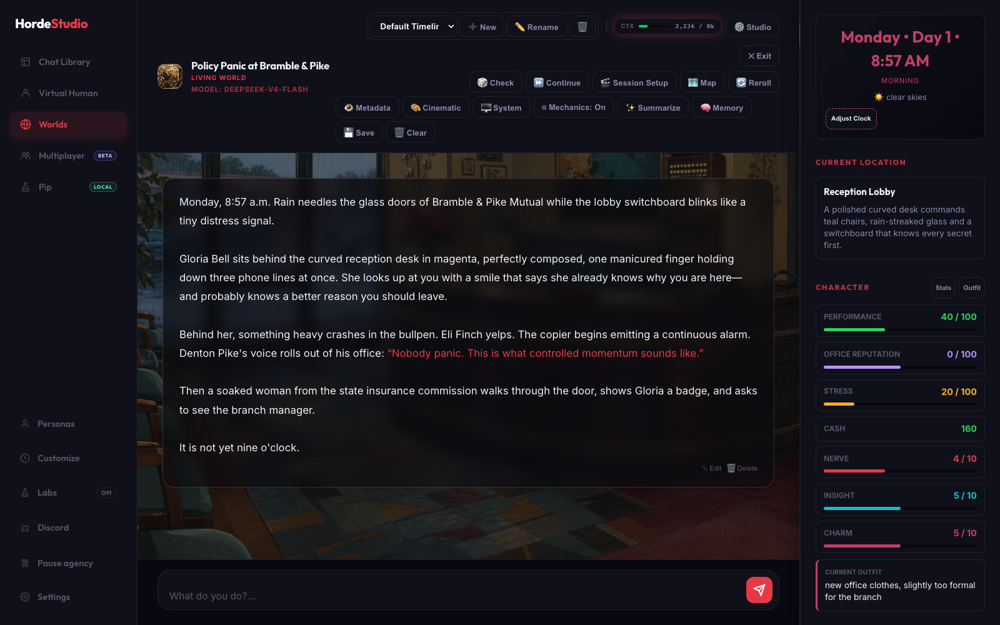
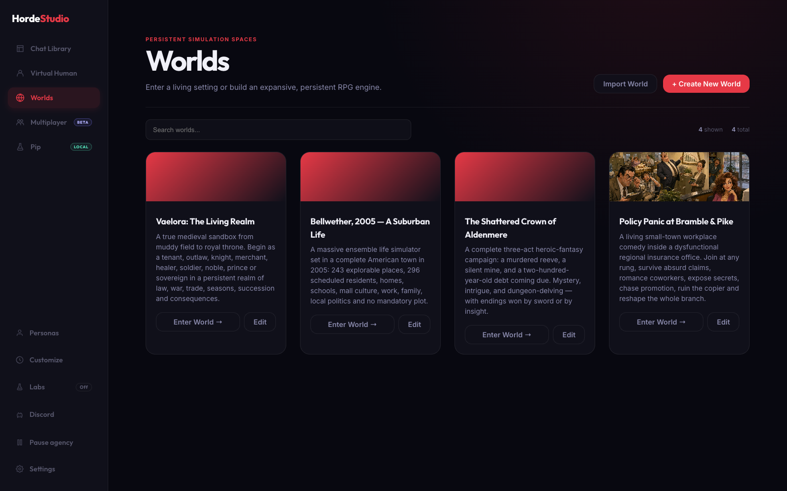
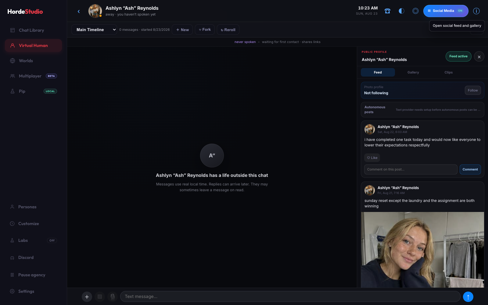
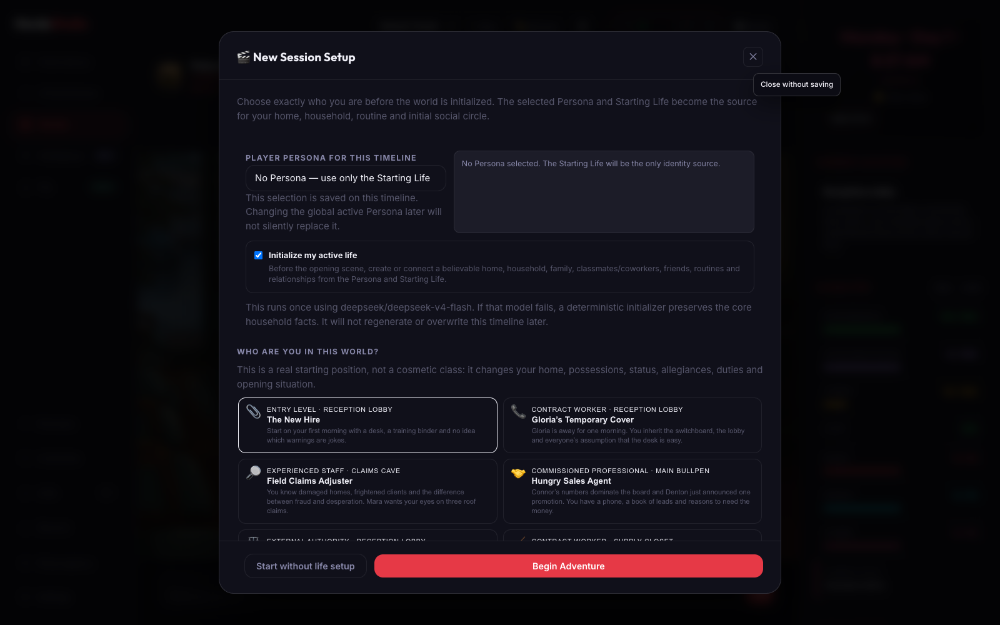
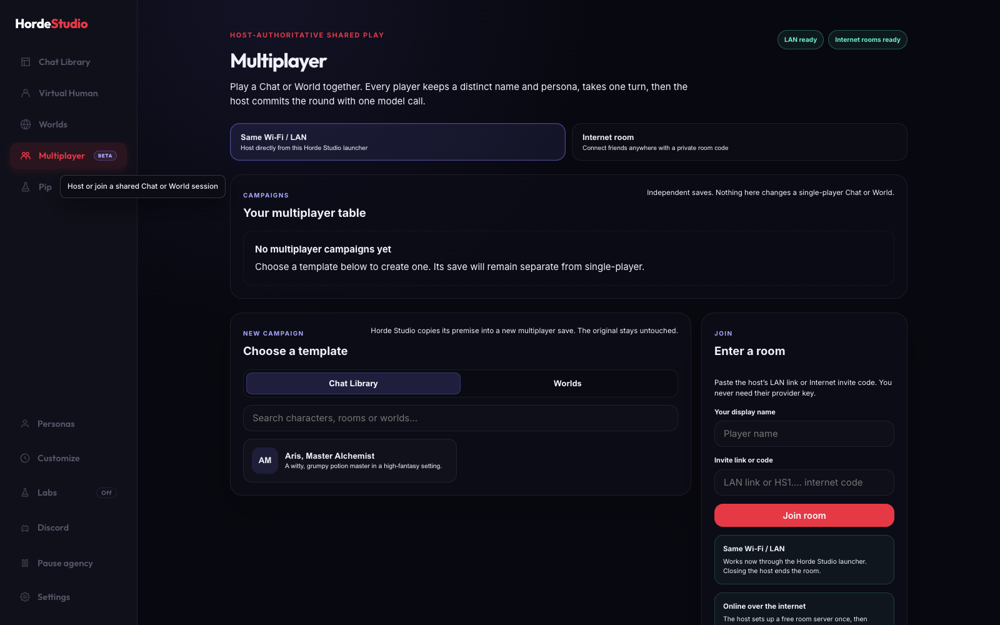
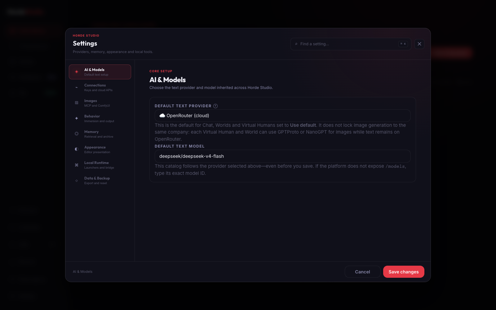

Persistent locations, time, NPC lives, relationships, inventory, RPG mechanics and consequences—around the conversation.
LOCAL-FIRST · BRING YOUR OWN MODELSBuild towns, buildings, rooms, routes, NPC schedules, factions and quests. Time advances. People move. State survives the next reply.

Real time, schedules, moods, evolving relationships, delayed replies, memories, photos, voice notes—and an optional social profile with feeds, galleries and clips.

Starting lives change your home, possessions, status, duties, social circle and opening situation. Worlds can define their own attributes, skills, perks and equipment.

Friends join by LAN link or Internet room code. Every player keeps a distinct persona and turn. The host owns the model call and authoritative campaign save.

Keep OpenRouter for text, use another provider for images or speech, connect ComfyUI, or point Horde Studio at an OpenAI-compatible local server.
